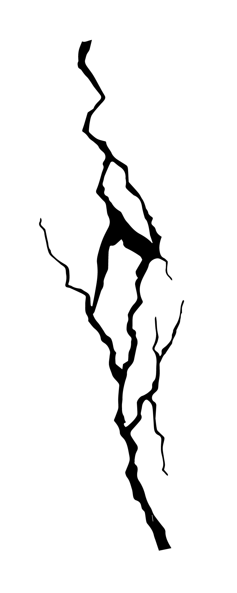
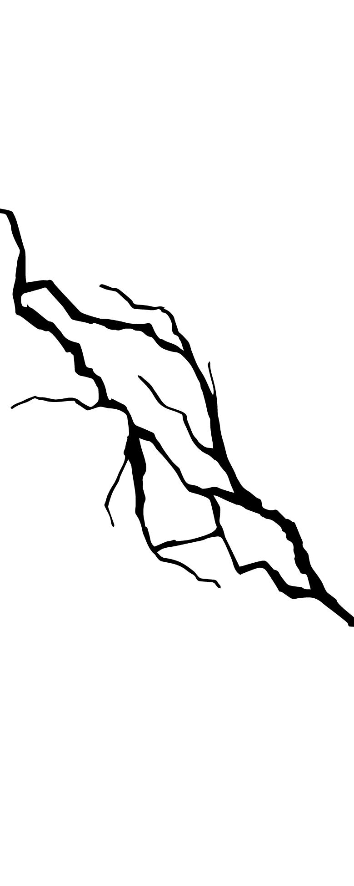
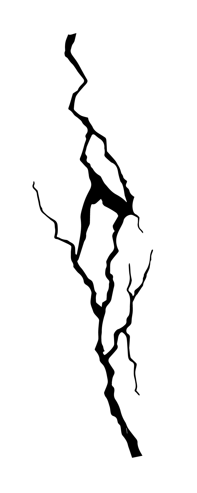
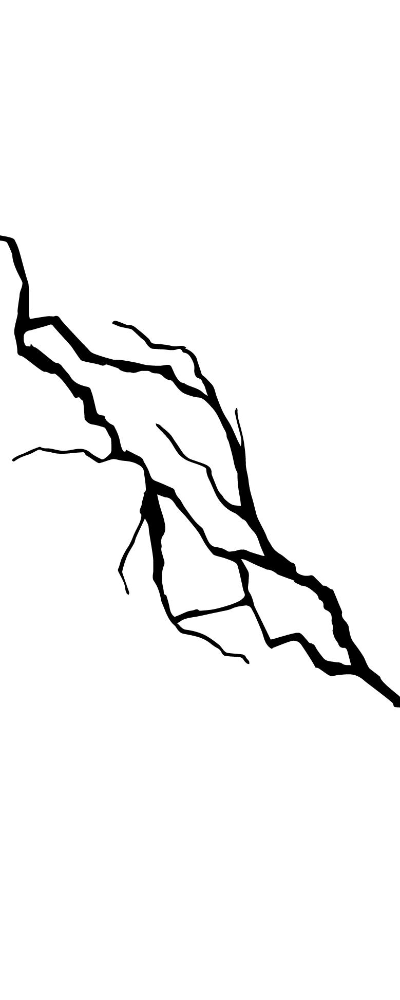

در سال 1395 یک کتاب با عنوان "خانه امین التجار اصفهانی" توسط نویسنده علی شیخ زاده، به انتشار رسیده است. این کتاب
در دسته بندی تاریخ کهن و باستان، معماری و تاریخ ایران قرار دارد و در خصوص وقایع عمارت امین التجار حکایت می کند.
عمارت امین التجار در 28 آذر 1354 به شماره ی 1280 در لیست آثار ملی ایران قرار گرفته است.
 


